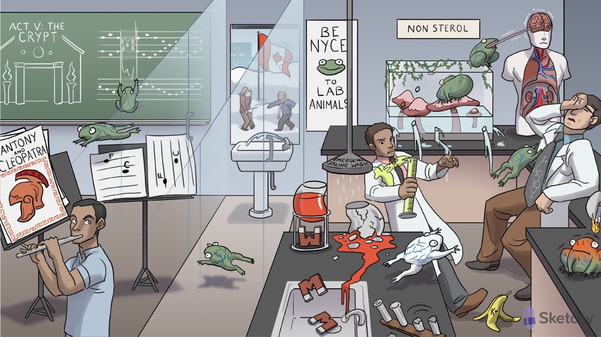

Amphibian: amphotericin (anti-fungal)
Non sterol: fungal cell membrane composed of ergosterol, not your usual cholesterol
Blue veiny pattern: thrombophlebitis is an immediate infusion-related toxicity of amphotericin
Holes in amphibian tank: amphotericin and nystatin bind ergosterol to form holes in the fungal cell membrane
Organ systems: amphotericin treats severe systemic fungal infections
Ivy: IV administration of amphotericin
Fat bubble: liposomal formulations of amphotericin prevent binding to human cholesterol membranes (decreased toxicity)
Amphibian binding cholesterol necktie: amphotericin toxicity results from non-selective binding to mammalian cholesterol membranes
Fainting and holding head: hypotension and headache are immediate infusion-related toxicities of amphotericin
Shake and bake: fevers and chills are immediate infusion-related toxicities of amphotericin
Tongue on brain: intrathecal administration of amphotericin to treat fungal CNS infections
Shaking brain: intrathecal administration of amphotericin can cause seizure and other CNS side effects
1 shaped acid tube: renal tubular acidosis (RTA) type 1 is cumulative toxicity of amphotericin
Depleted potassium banana peel: RTA type 1 is associated with hypokalemia
Magnet falling into sink: amphotericin can cause hypomagnesemia (due to renal magnesium wasting)
Emergency saline wash: volume expansion with IV normal saline before amphotericin administration prevents kidney damage
Cracked and drained kidney: amphotericin induced damage to renal tubular cells can cause anemia (decreased erythropoietin production)
Flute: flucytosine (anti-fungal)
C turned into U: cytosine deaminase in fungal cells converts flucytosine (a fluorinated cytosine) into 5-fluorouracil (5-FU)
Smeared double helix and single strand: flucytosine halts fungal DNA and RNA synthesis
Meningitis helmet: flucytosine and amphotericin combo treats cryptococcal meningitis
“Crypt”: flucytosine and amphotericin combo treats Cryptococcus infections (e.g. cryptococcal meningitis)
Nyce: nystatin (same mechanism of action as amphotericin)
Canada: nystatin is treats Candida infections (candidiasis)
Snow on crotch: topical nystatin treats mucocutaneous candidiasis (e.g. vaginal candidiasis)
Swish and swallow drinking fountain: oral nystatin rinse treats oropharyngeal candidiasis